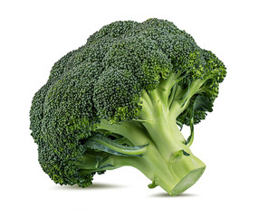
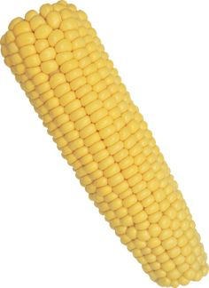

Sample Results
Compare the results of BERT-base with masked language modelling and CLIP with Stroop probing on the task of color association prediction. Note that the models receive only the name of the fruit or vegetable without the given image, shown for illustration purposes only.
BERT:
CLIP:

green
green

green
orange

red
yellow
white
brown
In our work we examine additional visual understanding tasks including concreteness prediction and shape association prediction. We also evaluate NLU tasks that do not directly involve visual reasoning as baselines.